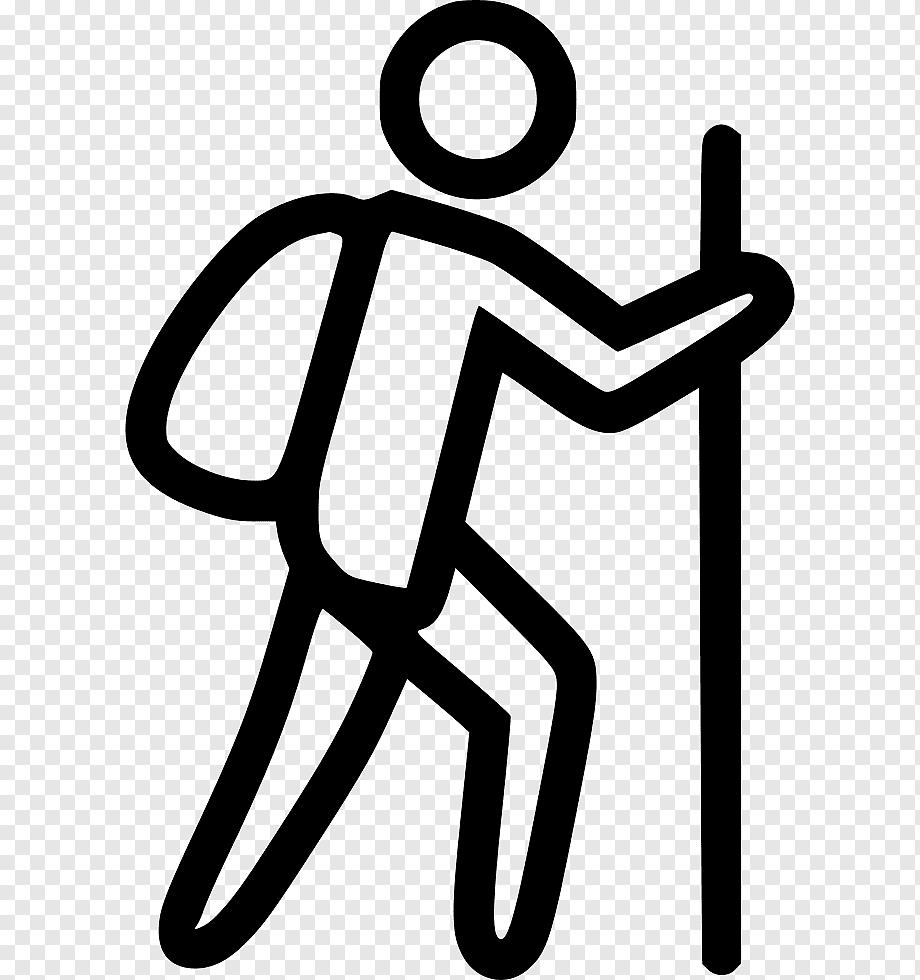
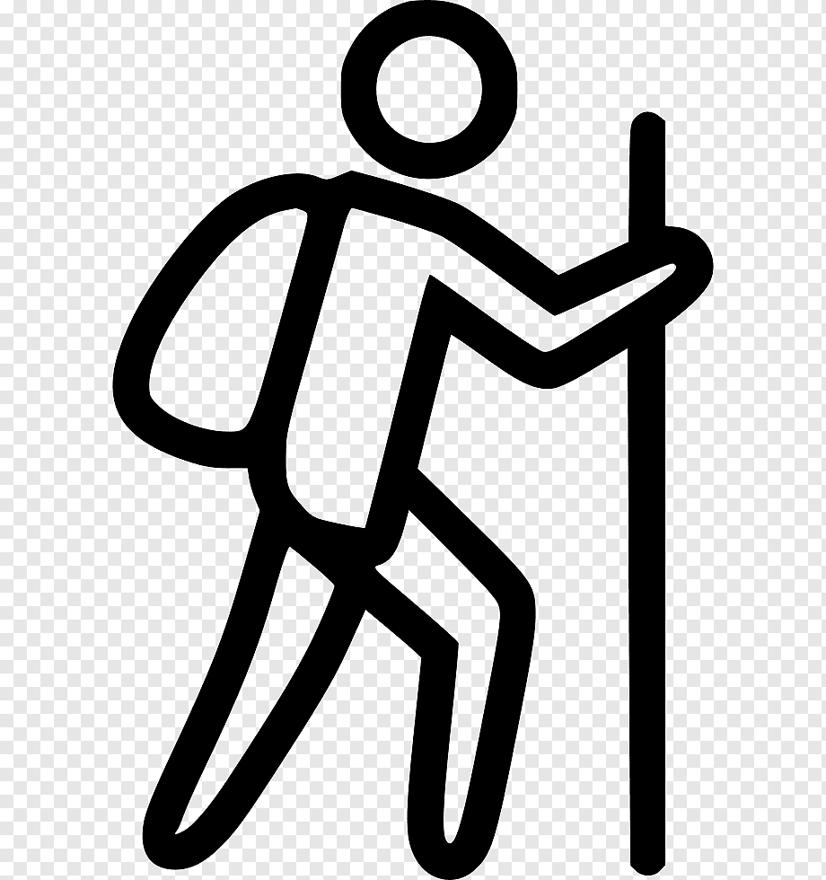

Información Personal
Nombre Completo: Cristian Flores Bernal
Fecha de Nacimiento: 8 de diciembre
Estado Civil: Soltero
Telefono de Contacto: +56911111111
Email: cris@gmail.com
Educación
Ingeniería en Informática
Institución: Instituto Profesional AIEP
Año de inicio: 2022
Año de finalización: Cursando actualmente
Titulado de Técnico en Administración de Empresas
Institución: Instituto Profesional AIEP
Fecha de inicio: 2018
Fecha de finalización: 2019
Experiencia Laboral
Gestor de Intercambio
Empresa: Banco de Crédito e Inversiones
Fecha de inicio: Agosto 2020
Fecha de finalización: Presente
Responsabilidades:
- Orquestar de punta a punta el proceso de controversias de tarjetas, asegurando cumplimientos de
normas y plazos establecidos por las Marcas Internacionales y Operadores (rol emisor y
adquirente) y la coordinación entre áreas internas (prevención de fraudes, Centro de servicios,
Contabilidad, Medios de Pagos y Operaciones) con la finalidad de asegurar el flujo de
investigación, evitar pérdidas financieras para el banco y asegurar una respuesta oportuna al
cliente dentro de los parámetros establecidos de seguridad, normativos y calidad de servicio.
Monitoreando que los flujos del proceso de intercambio que se implementen en el banco estén
actualizados y bajo las normas vigentes (Ley de fraude, release Marcas) coordinando y
participando los proyectos dispuestos por las marcas internacionales, Fiscalía y entidades
regulatorias.
Jefe de Servicio al Cliente
Empresa: Banco de Crédito e Inversiones
Fecha de inicio: Agosto 2018
Fecha de finalización: Agosto 2020
Responsabilidades:
- Capacitar y supervisar al personal de atención al cliente para garantizar que se brinde una
excelente atención al cliente. Esto puede incluir capacitación en habilidades de comunicación,
resolución de problemas y manejo de situaciones difíciles.
- Monitorear y mejorar la satisfacción del cliente para identificar áreas de mejora y tomar
medidas para garantizar que los clientes estén satisfechos con el servicio que reciben.
- Responsable de supervisar y gestionar el presupuesto del departamento de operaciones, lo que
puede incluir la asignación de recursos y la planificación de iniciativas para mejorar el
servicio al cliente.
Greeter
Empresa: Banco de Crédito e Inversiones
Fecha de inicio: Agosto 2013
Fecha de finalización: Agosto 2017
Responsabilidades:
- Estar ubicado en un lugar visible cerca de la entrada del banco para saludar a los clientes que
llegan y hacerles sentir bienvenidos.
- Si un cliente necesita ayuda, como abrir una nueva cuenta o solicitar un préstamo, programar una
cita con el ejecutivo apropiado o proporcionar información sobre lo que necesite el cliente.
- Ayudar con la seguridad en el banco al supervisar la entrada y salida de los clientes y
asegurarse de que se sigan los protocolos de seguridad adecuados.

 
